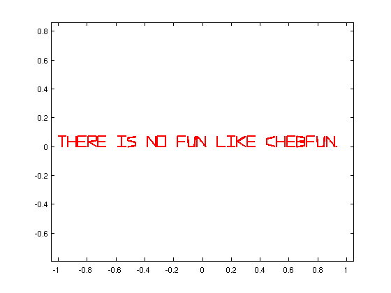
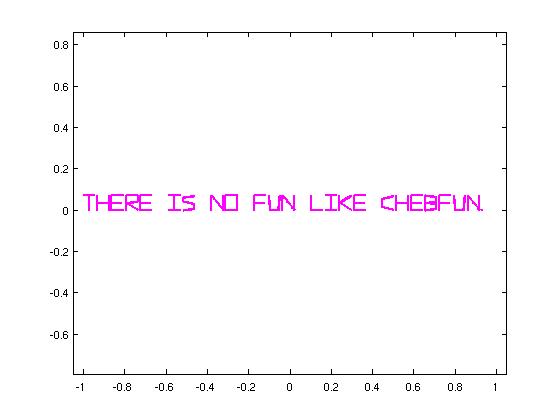
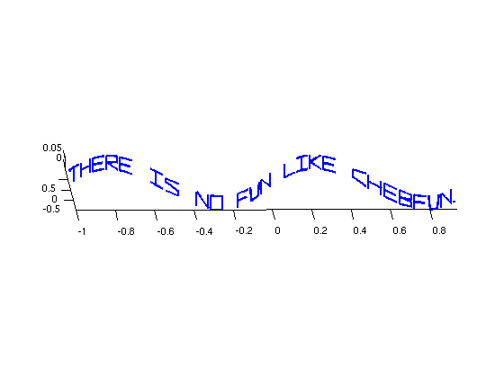

Writing a message in 3D
Nick Trefethen, November 2010
(Chebfun example fun/Writing3D.m)
The SCRIBBLE command produces a chebfun defined on the domain [-1,1] that takes piecewise linear complex values. For example:
s = scribble('There is no fun like chebfun.'); LW = 'linewidth'; plot(s,'r',LW,2.0) xlim(1.05*[-1 1]), axis equal, drawnow
The use of complex variables is just a convenience. We could produce the same result with real and imaginary parts. Note that we include 'jumpline','.' to prevent the inclusion of dotted lines connecting one component to the next. (Chebfun has different defaults for plotting gaps in real and complex functions.)
rs = real(s); is = imag(s); plot(rs,is,'m',LW,2.0,'jumpline','none') xlim(1.05*[-1 1]), axis equal, drawnow
It's a small step from here to plotting in 3D with the PLOT3 command. Here's an example
plot3(rs,sin(6*rs),is,'b',LW,2.0,'jumpline','none') axis equal, view(-1.5,6), drawnow
Here is a longer message composed by the British poet Kate McLoughlin. If you execute or publish this m-file, you will see the message circle around.
s = 6*scribble(['There is no fun like chebfun. ' ... 'Try it and you''ll see. ' ... 'It does your calculation, ' ... 'and makes a cup of tea!']); rs = real(s); plot3(cos(rs),sin(rs),imag(s)+.05*rs,LW,2,'jumpline','none') axis([-1 1 -1 1 -1 1]), axis off set(gca,'cameraviewanglemode','manual') view(-540,20), pause(1) for j = 1:720, camorbit(1,0), drawnow, end